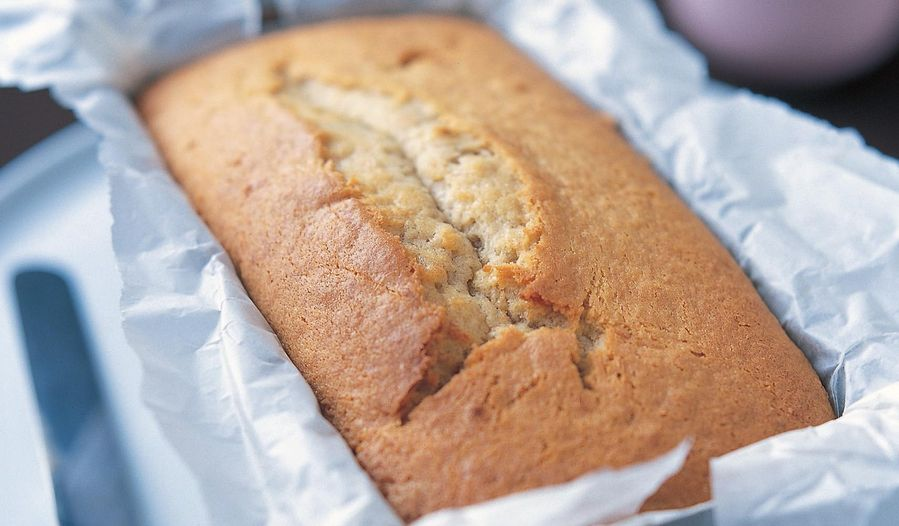

Banana Cake's Recipe

Description
This is a delicious banana cake recipe that is perfect for any occasion. It's moist, flavorful, and easy to make.
Ingredients
- 3 ripe bananas
- 1/3 cup melted butter
- 1 teaspoon baking soda
- Pinch of salt
- 3/4 cup sugar
- 1 large egg, beaten
- 1 teaspoon vanilla extract
- 1 1/2 cups all-purpose flour
Steps
- Preheat your oven to 350°F (175°C).
- In a mixing bowl, mash the ripe bananas.
- Add the melted butter to the mashed bananas and mix well.
- Mix in the baking soda and salt.
- Stir in the sugar, beaten egg, and vanilla extract.
- Gradually add the flour and mix until just combined.
- Pour the batter into a greased loaf pan.
- Bake for 60 minutes or until a toothpick inserted into the center comes out clean.
- Let the cake cool before serving.
Back to Homepage